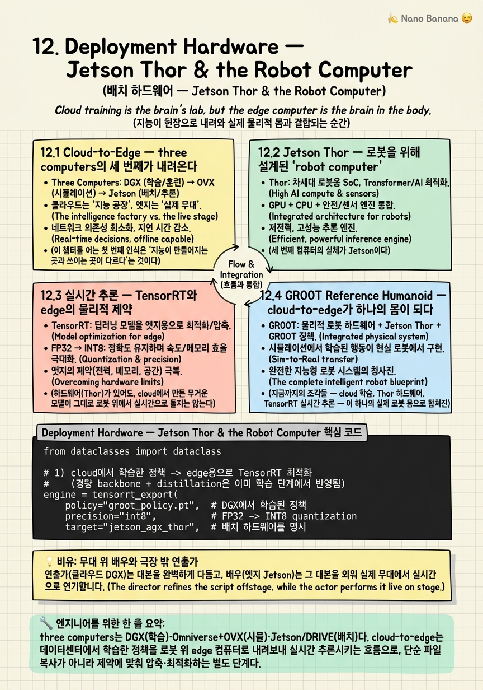

Deployment Hardware — Jetson Thor & the Robot Computer

🎯 학습 목표
- 학습-배치를 잇는 cloud-to-edge 구조를 설명한다
- Jetson Thor가 로봇용 'robot computer'로 설계된 맥락을 안다
- edge inference의 latency·전력·메모리 제약을 이해한다
- GR00T Reference Humanoid(H2 Plus+Thor)의 구성을 안다
- 배치 제약이 모델·정책 설계에 주는 피드백을 파악한다
지금까지 이 코스는 대체로 '정책을 어떻게 만드는가'를 이야기했다 — Omniverse에서 세계를 짓고, Isaac Sim·Cosmos로 데이터를 만들고, Isaac Lab에서 학습하고, GR00T 같은 foundation model을 빚었다. 이 모든 것은 데이터센터, 즉 DGX와 OVX가 있는 cloud에서 벌어진다. 하지만 로봇은 데이터센터 안에 살지 않는다. 로봇은 공장 바닥과 창고 통로, 사람 곁에서 움직인다. 이 챕터는 그 마지막 한 걸음 — cloud에서 학습한 정책이 실제 로봇의 몸으로 내려앉는 순간 — 을 다룬다.
이 순간을 지배하는 것이 NVIDIA의 전역 프레임인 three computers의 세 번째 컴퓨터다. DGX가 학습을, Omniverse+OVX가 시뮬을 담당했다면, 세 번째는 로봇 위에 실제로 올라가 추론을 돌리는 robot computer — 곧 Jetson이다. 데이터센터에서 만들어진 지능이 이 작은 모듈로 '내려오는(cloud-to-edge)' 것이 전체 스택의 완결이다.
핵심 통찰은 단순하지 않다. edge에 배치한다는 것은 그저 '학습한 모델을 옮겨 실행'하는 물류 문제가 아니다. 로봇 위의 컴퓨터는 벽에 꽂힌 데이터센터와 달리 latency(실시간이어야 넘어지지 않는다)·전력(배터리로 돈다)·메모리(모듈 하나에 들어가야 한다)라는 냉혹한 물리적 제약에 묶인다. 그리고 이 제약은 거꾸로 흐른다 — edge의 한계가 cloud에서 만드는 모델과 정책의 설계 자체를 규정한다. 경량 backbone, distillation, TensorRT 최적화가 그래서 필수가 된다.
이 챕터는 이 논리를 네 겹으로 본다. 먼저 cloud-to-edge라는 전체 구조(12.1), 그 edge를 담당하는 하드웨어 Jetson Thor와 AGX(12.2), 실시간 추론을 가능하게 하는 TensorRT와 물리적 제약(12.3), 그리고 이 모든 것이 하나의 몸으로 합쳐진 GR00T Reference Humanoid(12.4)다. 마지막으로 이 제약이 왜 NVIDIA의 수직 통합 전략의 핵심인지(12.5)를 짚는다.
핵심 내용
12.1 Cloud-to-Edge — three computers의 세 번째가 내려온다
이 챕터를 여는 첫 번째 인식은 '지능이 만들어지는 곳과 쓰이는 곳이 다르다'는 것이다.
이 코스가 처음부터 깔아온 전역 프레임이 three computers다. 세 대의 서로 다른 컴퓨터가 Physical AI의 생애주기를 나눠 맡는다.
three computers = (1) 학습용 DGX/데이터센터, (2) 시뮬용 Omniverse+OVX, (3) 배치용 Jetson·DRIVE. 각각 지능을 만들고(train), 안전하게 연습시키고(simulate), 실제 몸에 올려 실행한다(deploy).
앞선 열한 챕터는 사실상 앞의 두 컴퓨터 이야기였다. Isaac Sim·Cosmos로 데이터를 만들고 Isaac Lab에서 정책을 학습시키는 모든 과정이 데이터센터 안에서 벌어졌다. 이 챕터는 세 번째 컴퓨터, 즉 정책이 실제로 실행되는 로봇 위의 컴퓨터로 무게중심을 옮긴다.
그 이동을 부르는 이름이 cloud-to-edge다.
cloud-to-edge = 데이터센터(cloud)에서 학습한 정책을, 로봇 위에 탑재된 edge 컴퓨터(Jetson·DRIVE)로 내려보내 실시간으로 추론시키는 흐름. 지능이 만들어진 곳에서 쓰이는 곳으로 '내려오는' 방향이다.
왜 이 방향성이 중요한가? cloud와 edge는 정반대의 세계다. cloud는 전력·냉각·메모리가 사실상 무제한이고, 며칠에 걸쳐 거대한 모델을 학습시킬 수 있다. 반면 edge는 로봇의 몸 안이다 — 배터리로 돌고, 발열을 감당해야 하고, 손바닥만 한 모듈에 들어가야 하며, 무엇보다 결과를 밀리초 단위로 내놓아야 한다. 넘어지려는 휴머노이드에게 '잠시 후 답을 드리겠다'는 없다.
그래서 cloud-to-edge는 단순한 파일 복사가 아니다. cloud에서 만든 무거운 정책을 edge의 물리적 제약에 맞게 압축·최적화해 얹는, 별도의 엔지니어링 단계다. 이 챕터의 나머지는 그 edge 컴퓨터가 무엇이고(12.2), 어떻게 실시간을 달성하며(12.3), 그것이 어떤 로봇 몸으로 완성되는지(12.4)를 따라간다.
12.2 Jetson Thor — 로봇을 위해 설계된 'robot computer'
세 번째 컴퓨터의 실체가 Jetson이다. 이 절은 그 하드웨어가 왜 '로봇용'으로 따로 설계되었는지를 본다.
Jetson = 로봇 위에 직접 탑재되는 edge 컴퓨터, 곧 NVIDIA가 말하는 'robot computer'. 데이터센터 GPU와 달리 로봇의 몸 안에 들어가도록 전력·크기·발열이 설계된 모듈이다.
그 최신 세대가 Jetson Thor다.
Jetson AGX Thor = Blackwell GPU 아키텍처 기반의 로봇용 edge 컴퓨터. 휴머노이드를 겨냥한 모듈이 T5000이며, cloud에서 학습한 정책을 로봇 위에서 실시간으로 추론하는 것이 존재 이유다.
Thor를 이해하는 핵심은 '왜 데이터센터 GPU를 그냥 로봇에 넣지 않는가'라는 질문이다. 데이터센터의 Blackwell GPU는 수백 와트를 쓰고 거대한 냉각을 요구한다 — 배터리로 도는 로봇 몸에는 물리적으로 불가능하다. Thor는 같은 Blackwell 계보의 연산 능력을 로봇이 감당할 수 있는 전력·크기·발열 예산 안으로 압축해 넣은 것이다. 즉 Thor는 '작아진 데이터센터'가 아니라, edge의 제약을 처음부터 전제로 설계된 다른 종류의 컴퓨터다.
차량 쪽에는 짝이 되는 형제가 있다.
DRIVE AGX Thor = 같은 Thor 계보의 차량용(automotive) 버전. 자율주행차(Chapter 10)의 실시간 추론을 담당한다. 휴머노이드용 Jetson AGX Thor와 자율주행용 DRIVE AGX Thor가 하나의 아키텍처에서 갈라져 나온다는 점이 중요하다 — 로봇이든 차든, 결국 같은 edge 추론 문제를 푸는 같은 뿌리의 하드웨어다.
이 통일성이 NVIDIA 스택의 일관성을 보여준다. Isaac SW 스택(Isaac Sim→Isaac Lab→policy)이 Jetson 위에서 돌고, DRIVE 스택이 DRIVE AGX 위에서 돈다. cloud에서 학습에 쓴 것과 같은 계보의 GPU 아키텍처가 edge에도 있으므로, 학습에서 배치까지 소프트웨어·연산 모델이 매끄럽게 이어진다. Thor는 이 cloud-to-edge 다리의 edge 쪽 교각인 셈이다.
12.3 실시간 추론 — TensorRT와 edge의 물리적 제약
하드웨어(Thor)가 있어도, cloud에서 만든 무거운 모델이 그대로 로봇 위에서 실시간으로 돌지는 않는다. 그 간극을 메우는 것이 이 절의 주제다.
edge inference를 지배하는 것은 세 가지 물리적 제약이다.
edge의 3대 제약 = (1) latency(지연) — 결과를 밀리초 안에 내놓아야 로봇이 넘어지지 않는다, (2) 전력(power) — 배터리로 돌므로 연산당 전력이 곧 작동 시간이다, (3) 메모리(memory) — 모델과 활성값이 모듈의 제한된 메모리 안에 들어가야 한다.
이 세 제약을 뚫는 핵심 도구가 TensorRT다.
TensorRT = NVIDIA GPU에서 딥러닝 추론을 최적화하는 런타임. 학습된 모델을 그래프 최적화·정밀도 축소(예: FP16/INT8 quantization)·커널 융합 등으로 압축해, 같은 하드웨어에서 훨씬 낮은 latency와 메모리로 실행되게 만든다.
TensorRT가 하는 일을 직관적으로 보면, 학습 시점의 모델은 '유연하지만 무거운' 형태다 — 온갖 연산이 일반적인 형태로 흩어져 있다. TensorRT는 이 모델을 특정 Jetson 하드웨어에 맞춰 '실행 전용'으로 다시 컴파일한다. 여러 연산을 하나의 GPU 커널로 융합하고, 정밀도를 FP32에서 FP16/INT8로 낮춰 메모리와 연산을 줄이고, 하드웨어에 가장 빠른 커널을 골라 붙인다. 정확도 손실을 최소화하면서 속도·메모리·전력을 크게 개선하는 것이다.
이것이 얼마나 실질적인지 이 코스가 앞서 다룬 사례가 보여준다. mobility 워크플로우 COMPASS는 TensorRT 최적화를 거쳐 Jetson Orin(Thor 이전 세대) 위에서 약 29ms latency, 약 422MB 메모리로 돌았다. 이 숫자가 요점을 압축한다 — 29ms는 실시간 제어 루프에 들어갈 만큼 빠르고, 422MB는 edge 모듈에 들어갈 만큼 작다. cloud에서라면 신경도 안 쓸 이 두 숫자가, edge에서는 배치 가능/불가능을 가르는 결정적 지표다.
그래서 실시간 추론은 '모델을 실행한다'가 아니라 '제약 안에 모델을 밀어 넣는다'는 엔지니어링이다. 그리고 이 제약이 학습 단계로 거슬러 올라가 영향을 미친다는 것이 다음 절과 이 챕터 전체의 통찰이다.
12.4 GR00T Reference Humanoid — cloud-to-edge가 하나의 몸이 되다
지금까지의 조각들 — cloud 학습, Thor 하드웨어, TensorRT 실시간 추론 — 이 하나의 실제 로봇 몸으로 합쳐진 것이 GR00T Reference Humanoid다. 이 챕터의 모든 개념을 한눈에 보여주는 종합판이다.
GR00T Reference Humanoid Robot(GTC 2026 공개) = 학계·연구용으로 NVIDIA가 내놓은 오픈 reference design(참조 설계) 휴머노이드. 연구자가 맨바닥부터 하드웨어를 짜지 않고, 검증된 몸체·컴퓨트·소프트웨어 조합을 그대로 가져다 쓸 수 있게 한 표준 플랫폼이다.
그 구성이 이 코스 전체를 압축한다.
-
몸체(chassis): Unitree H2 Plus — 약 6ft(약 183cm) 키, 약 150lb(약 68kg) 무게, 75 DoF(자유도). 사람 크기에 가까운 고자유도 휴머노이드 몸이다.
-
손(hands): Sharpa Wave — 5-finger tactile hands, 즉 촉각을 갖춘 다섯 손가락 손. contact-rich manipulation(접촉이 많은 정밀 조작)을 위한 부분이다.
-
온보드 컴퓨트(compute): Jetson AGX Thor T5000 — 12.2에서 본 바로 그 휴머노이드용 robot computer가 이 몸 위에 올라간다.
-
소프트웨어(software): Isaac GR00T 오픈 SW 스택 — Chapter 8에서 본 GR00T foundation model과 그 스택이 이 몸을 움직인다.
이 구성이 왜 이 챕터의 결론인지 보자. GR00T Reference Humanoid는 three computers의 세 컴퓨터가 하나의 몸에서 만나는 지점이다 — DGX에서 학습된 GR00T 정책이, Omniverse/Isaac Lab에서 검증되고, Jetson Thor T5000 위에서 TensorRT로 실시간 추론되어, 75 DoF의 Unitree 몸과 Sharpa 촉각 손을 움직인다. 이 코스가 챕터마다 따로 본 조각들이 여기서 하나의 물리적 로봇으로 수렴한다.
'reference design'이라는 형식도 짚어야 한다. NVIDIA는 이 로봇을 팔아 돈을 벌려는 게 아니라, 연구 생태계 전체가 같은 표준 몸·컴퓨트·SW 위에서 연구하도록 판을 깐다. 앞선 Blueprint들(Mega·GR00T-Dreams·Cosmos 워크플로우)이 소프트웨어 청사진이었다면, GR00T Reference Humanoid는 그 하드웨어 버전이다 — '능력을 재현 가능한 참조 구현으로 배포한다'는 NVIDIA의 일관된 방식이, 마침내 로봇의 몸 자체에까지 적용된 것이다.

12.5 제약이 설계를 규정한다 — 그리고 수직 통합
마지막 겹은 이 챕터의 가장 깊은 통찰이자, NVIDIA 전략의 핵심이다 — edge의 제약은 흐름의 끝이 아니라, 거꾸로 흐름의 시작을 규정한다.
순진하게 보면 파이프라인은 한 방향이다 — cloud에서 최고의 모델을 만들고, 그다음 edge에 얹는다. 하지만 현실은 반대로도 흐른다.
핵심 insight = edge의 제약(latency·전력·메모리)이 거꾸로 cloud에서 만드는 모델·정책의 설계 자체를 규정한다. Jetson에 29ms·수백 MB로 들어가야 한다는 사실이, 학습 단계의 아키텍처 선택을 미리 결정한다.
이 역방향 피드백이 구체적으로 무엇을 강제하는가.
-
경량 backbone — 애초에 edge에 들어갈 크기의 backbone을 골라 학습한다. 거대한 모델을 만든 뒤 억지로 줄이는 게 아니라, 처음부터 edge 예산을 염두에 둔다.
-
distillation(증류) — 큰 teacher 모델의 능력을, edge에 들어갈 작은 student 모델로 옮긴다. 성능은 유지하되 크기는 줄인다.
-
TensorRT 최적화 — 12.3에서 본 실행 단계 압축을, 설계 단계부터 전제한다. 'TensorRT로 변환 가능한' 연산으로 모델을 구성한다.
즉 edge 제약은 배치 담당 엔지니어만의 문제가 아니라, 모델을 설계하는 연구자에게까지 거슬러 올라가는 설계 원리다. '실시간으로 로봇 몸에서 돌아야 한다'는 요구가, 정책의 크기·구조·학습 방식 전체를 조형한다.
그리고 여기서 NVIDIA의 전략적 강점이 드러난다.
cloud-to-robot 수직 통합 = 학습(DGX)·시뮬(Omniverse/OVX)·배치(Jetson/DRIVE)가 모두 같은 회사의 같은 GPU 아키텍처·소프트웨어 스택으로 이어지는 구조. cloud에서 edge까지 하나의 수직선으로 묶여 있다.
이 수직 통합이 왜 강점인가? edge 제약이 cloud 설계를 규정한다면, cloud와 edge가 같은 아키텍처(Blackwell 계보)·같은 도구(CUDA·TensorRT·Isaac)로 묶여 있을 때 그 되먹임이 매끄럽다. 학습 시점에 이미 배치 하드웨어(Thor)의 특성을 알고, TensorRT 변환을 전제하고, 같은 소프트웨어 스택으로 시뮬·검증·배치가 이어진다. 학습과 배치가 서로 다른 벤더의 이질적 스택이라면 이 되먹임 고리 곳곳에서 마찰이 생긴다.
그래서 이 챕터는 하드웨어 챕터이면서 전략 챕터다. Jetson Thor는 단지 '좋은 edge 칩'이 아니라, DGX에서 시작해 Jetson에서 끝나는 하나의 수직선을 완성하는 마지막 조각이다. 이 수직 통합이 NVIDIA를 로봇 부품 공급자가 아니라 'Physical AI의 cloud-to-robot 전체 스택 소유자'로 만든다 — 그 전체 그림을 다음 마지막 챕터에서 종합한다.
💡 비유로 이해하기
cloud-to-edge를 이해하려면, 거대한 연습실에서 몇 달간 배역을 다듬는 연출가와, 실제 무대에 홀로 서서 실시간으로 연기하는 배우를 떠올리면 된다. 연습실(cloud)에는 시간도 자원도 넉넉하다 — 대본을 수백 번 다시 쓰고, 온갖 해석을 실험하고, 필요하면 며칠씩 매달린다. 하지만 막이 오르고 배우가 무대(edge)에 서는 순간, 세계가 완전히 바뀐다. 관객 앞에서는 '잠깐만요, 생각 좀 할게요'가 없다. 다음 대사는 지금 이 순간, 정확한 타이밍에, 준비된 에너지 안에서 나와야 한다. 넘어지려는 휴머노이드에게 29ms가 데드라인인 것과 똑같다.
그래서 무대에 오르는 배우는 연습실의 방대한 노트를 통째로 들고 가지 않는다. 핵심을 몸에 익혀 압축한다 — 이것이 TensorRT의 distillation·quantization이다. 두꺼운 연출 노트(FP32 대형 모델)를, 무대에서 반사적으로 튀어나오는 몸의 기억(INT8 경량 모델)으로 바꾸는 것이다. Jetson Thor는 이 배우의 몸 그 자체다 — 연습실의 거대한 장비를 다 가져올 순 없지만, 같은 예술을 무대의 제약(전력·크기·실시간) 안에서 해내도록 설계된 몸.
결정적인 통찰은 방향에 있다. 순진하게 보면 연출가가 먼저 완벽한 대본을 쓰고 배우가 그걸 무대에 옮기는 한 방향처럼 보인다. 하지만 훌륭한 연출가는 처음부터 '이건 무대에서 실시간으로 나올 수 있는가'를 염두에 두고 대본을 쓴다. 무대의 제약이 연습실의 창작을 거꾸로 규정하는 것이다 — edge 제약이 cloud 모델 설계를 규정한다는 이 챕터의 핵심과 정확히 같다.
그리고 GR00T Reference Humanoid는, 연출가·배우·무대·대본이 모두 한 극단 소속인 상태다. 연습실(DGX)·리허설 무대(Omniverse)·본무대의 몸(Jetson Thor)·대본(GR00T SW)이 전부 같은 언어와 방식으로 통합되어 있으니, 연습에서 본공연까지 마찰 없이 이어진다. NVIDIA의 수직 통합이란 결국 이렇게 극단 전체를 한 지붕 아래 두는 것이다.
💻 코드 예시
cloud-to-edge 배치의 개념 코드다. 실제 API가 아니며, 요점은 '학습된 정책을 TensorRT로 최적화해 Jetson Thor에 얹고, 실시간 제어 루프 안에서 latency 예산을 지켜 추론한다'는 것과, 그 몸이 되는 GR00T Reference Humanoid의 스펙이다.
from dataclasses import dataclass
# 1) cloud에서 학습한 정책 -> edge용으로 TensorRT 최적화
# (경량 backbone + distillation은 이미 학습 단계에서 반영됨)
engine = tensorrt_export(
policy="groot_policy.pt", # DGX에서 학습된 정책
precision="int8", # FP32 -> INT8 quantization
target="jetson_agx_thor", # 배치 하드웨어를 명시
) # 결과: 저지연·저메모리 실행 전용 engine
# 2) Jetson Thor 위 실시간 제어 루프 (edge inference)
LATENCY_BUDGET_MS = 30 # 넘으면 로봇이 불안정해진다
while robot.is_active():
obs = robot.read_sensors() # 카메라·촉각·관절 상태
action, ms = engine.infer(obs) # 실시간 추론 (예: ~29ms)
assert ms < LATENCY_BUDGET_MS # latency 제약을 지켰는가
robot.apply(action) # 75 DoF 몸에 명령
# 3) GR00T Reference Humanoid = cloud-to-edge가 합쳐진 몸
@dataclass
class GR00TReferenceHumanoid:
chassis: str = "Unitree H2 Plus" # ~6ft, ~150lb, 75 DoF
dof: int = 75
hands: str = "Sharpa Wave (5-finger tactile)"
compute: str = "Jetson AGX Thor T5000" # 세 번째 컴퓨터
software: str = "Isaac GR00T open stack"
# DGX 학습 -> Omniverse 검증 -> Thor 실시간 추론이 이 한 몸에서 만난다이 코드의 핵심은 배치가 '파일 복사'가 아니라 '제약에 모델을 밀어 넣는 엔지니어링'이라는 점이다. 1) tensorrt_export는 cloud(DGX)에서 학습된 정책을 특정 배치 하드웨어(target="jetson_agx_thor")를 명시해 INT8로 quantize하며 실행 전용 engine으로 다시 컴파일한다 — 12.3의 TensorRT 최적화다. 주석이 짚듯 경량 backbone·distillation은 이미 학습 단계에서 반영되어 있다(12.5의 역방향 피드백). 2) 제어 루프가 edge inference의 본질을 담는다 — LATENCY_BUDGET_MS=30이라는 예산과 assert ms < BUDGET이 요점이다. 29ms 같은 실측 latency가 이 예산을 지켜야 로봇이 안정적으로 제어된다(COMPASS의 Jetson Orin ~29ms 사례가 이 숫자의 근거다). cloud에서라면 신경 안 쓸 밀리초가 여기서는 배치 가능/불가능을 가른다. 3) GR00TReferenceHumanoid dataclass는 12.4의 종합이다 — Unitree H2 Plus(75 DoF) 몸, Sharpa Wave 촉각 손, Jetson AGX Thor T5000 컴퓨트, Isaac GR00T SW가 한 데이터 구조로 묶인다. 마지막 주석대로 DGX 학습·Omniverse 검증·Thor 추론이라는 three computers가 이 한 몸에서 만나는 것이 이 챕터의 결론이다.
🏭 현업에서의 평가
✅ 시니어가 보는 것
- three computers(DGX 학습·Omniverse 시뮬·Jetson/DRIVE 배치)를 구분하고, cloud-to-edge가 지능이 만들어진 곳에서 쓰이는 곳으로 내려오는 별도의 엔지니어링 단계임을 규정하는가
- Jetson을 로봇용 'robot computer'로, Jetson AGX Thor를 Blackwell 기반 휴머노이드용(T5000)·DRIVE AGX Thor를 차량용으로 구분하고, 왜 데이터센터 GPU를 그대로 못 쓰는지(전력·크기·발열) 설명하는가
- edge의 3대 제약(latency·전력·메모리)을 구체적으로 들고, TensorRT가 quantization·커널 융합으로 이를 뚫는 도구임을 이해하며, COMPASS의 Jetson Orin ~29ms/~422MB 같은 실측 지표의 의미를 읽는가
- GR00T Reference Humanoid(Unitree H2 Plus 75 DoF + Sharpa Wave 촉각 손 + Jetson AGX Thor T5000 + Isaac GR00T 스택)를 three computers가 한 몸에서 만나는 종합으로 설명하고, reference design의 목적을 아는가
- edge 제약이 거꾸로 cloud 모델·정책 설계(경량 backbone·distillation·TensorRT 전제)를 규정한다는 역방향 피드백을 인식하고, 이것이 cloud-to-robot 수직 통합의 전략적 강점·lock-in과 연결됨을 읽는가
⚠️ 레드 플래그
- 배치를 '학습한 모델을 그냥 옮겨 실행'하는 물류 문제로만 보고, latency·전력·메모리라는 물리적 제약과 별도 최적화 단계의 존재를 인식하지 못하는 경우
- Jetson/DRIVE Thor를 '작아진 데이터센터 GPU'로만 보고, edge 제약을 전제로 설계된 다른 종류의 컴퓨터라는 점과 휴머노이드용·차량용 구분을 놓치는 경우
- TensorRT를 단순 '실행 라이브러리'로만 알고, quantization·커널 융합을 통한 latency·메모리 압축의 실질과 배치 가능성을 가르는 지표(29ms·수백 MB)의 의미를 설명하지 못하는 경우
- GR00T Reference Humanoid를 그냥 '또 하나의 로봇 제품'으로 보고, three computers의 종합이자 연구 생태계용 reference design이라는 성격을 놓치는 경우
- 파이프라인을 cloud→edge 한 방향으로만 이해하고, edge 제약이 거꾸로 cloud 설계를 규정하는 되먹임과 수직 통합의 전략적 함의(강점이자 lock-in)를 읽지 못하는 경우
🎤 예상 인터뷰 질문
- Q1 (구조): three computers에서 세 번째 컴퓨터가 무엇이며 cloud-to-edge가 왜 단순 파일 복사가 아닌지 설명하라. 왜 데이터센터 GPU를 로봇에 그대로 넣을 수 없는가?
- Q2 (제약·도구): edge inference의 3대 제약을 들고, TensorRT가 각각을 어떻게 완화하는지 설명하라. COMPASS가 Jetson Orin에서 ~29ms/~422MB로 돌았다는 수치가 배치 관점에서 왜 결정적인가?
- Q3 (되먹임·전략): edge 제약이 거꾸로 cloud의 모델 설계를 규정한다는 것이 무슨 뜻인지 경량 backbone·distillation·TensorRT로 설명하고, 이것이 NVIDIA의 cloud-to-robot 수직 통합의 강점이자 lock-in 리스크인 이유를 논하라.
✨ 핵심 요약
세 번째 컴퓨터가 내려온다 — cloud-to-edge
three computers는 DGX(학습)·Omniverse+OVX(시뮬)·Jetson/DRIVE(배치)다. cloud-to-edge는 데이터센터에서 학습한 정책을 로봇 위 edge 컴퓨터로 내려보내 실시간 추론시키는 흐름으로, 단순 파일 복사가 아니라 제약에 맞춰 압축·최적화하는 별도 단계다.
Jetson = 로봇용 'robot computer'
Jetson은 로봇 몸 안에 들어가도록 전력·크기·발열이 설계된 edge 컴퓨터다. Jetson AGX Thor는 Blackwell 기반이며 휴머노이드용 모듈이 T5000이다. 데이터센터 GPU를 못 쓰는 이유가 바로 그 물리적 제약이며, Thor는 '작아진 데이터센터'가 아니라 edge를 전제로 설계된 다른 컴퓨터다.
Thor의 두 형제 — 로봇과 차
Jetson AGX Thor(휴머노이드용)와 DRIVE AGX Thor(차량용)는 같은 Thor 아키텍처에서 갈라진다. 로봇이든 자율주행차든 결국 같은 edge 실시간 추론 문제를 푸는 같은 뿌리의 하드웨어다 — Isaac SW는 Jetson에, DRIVE 스택은 DRIVE AGX에 얹힌다.
edge의 3대 제약과 TensorRT
edge inference는 latency(밀리초 데드라인)·전력(배터리)·메모리(모듈 용량)에 묶인다. TensorRT는 quantization(FP16/INT8)·커널 융합·그래프 최적화로 이를 뚫는다. COMPASS가 Jetson Orin에서 ~29ms/~422MB로 돈 것이 실증이다 — 이 두 숫자가 배치 가능/불가능을 가른다.
GR00T Reference Humanoid — 한 몸으로의 종합
GTC 2026 공개된 학계용 오픈 reference design. Unitree H2 Plus(~6ft, ~150lb, 75 DoF) 몸 + Sharpa Wave 5-finger 촉각 손 + Jetson AGX Thor T5000 온보드 컴퓨트 + Isaac GR00T 오픈 SW 스택. three computers가 하나의 물리적 로봇에서 만나는 지점이다.
제약이 설계를 규정한다 — 역방향 피드백
핵심 insight: edge 제약(latency·전력·메모리)이 거꾸로 cloud에서 만드는 모델·정책 설계를 규정한다. 경량 backbone을 처음부터 고르고, distillation으로 능력을 작은 모델에 옮기고, TensorRT 변환을 전제로 아키텍처를 짠다. 배치 담당만이 아니라 연구자에게까지 거슬러 올라가는 설계 원리다.
reference design이라는 배포 방식
NVIDIA는 이 휴머노이드를 팔려는 게 아니라 연구 생태계가 같은 표준 몸·컴퓨트·SW 위에서 연구하도록 판을 깐다. Mega·Cosmos 워크플로우 같은 소프트웨어 Blueprint의 하드웨어 버전으로, '능력을 재현 가능한 참조 구현으로 배포'하는 일관된 방식이 로봇의 몸에까지 적용된 것이다.
cloud-to-robot 수직 통합
학습(DGX)·시뮬(Omniverse/OVX)·배치(Jetson/DRIVE)가 같은 GPU 아키텍처·소프트웨어 스택(CUDA·TensorRT·Isaac)으로 하나의 수직선으로 이어진다. edge 제약이 cloud 설계를 규정하는 되먹임이 매끄러워지는 것이 강점이자, NVIDIA를 부품 공급자가 아닌 전체 스택 소유자로 만드는 전략의 핵심이다.